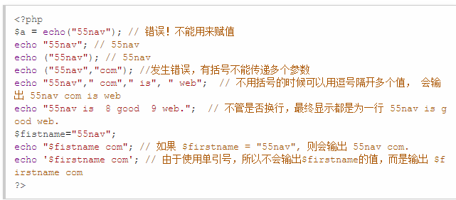
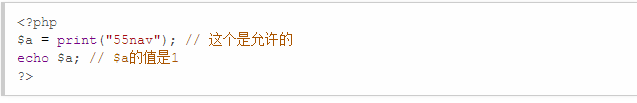
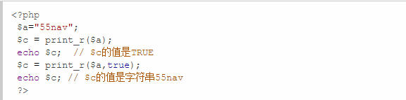
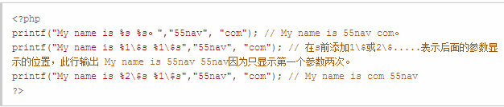
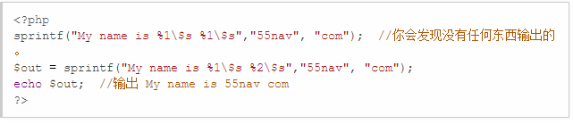
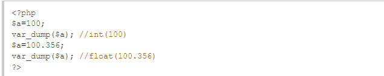

一、echo
echo() 实际上不是一个函数，是php语句，因此您无需对其使用括号。 不过，如果您希望向echo()传递一个以上的参数，那么使用括号会发生解析错误。 而且echo是返回void的，并不返回值，所以不能使用它来赋值。例子： 
二、print
print() 和 echo()用法一样，但是echo速度会比print快一点点。 实际上它也不是一个函数，因此您无需对其使用括号。 不过，如果您希望向print()传递一个以上的参数，那么使用括号会发生解析错误。 注意print总是返回1的，这个和echo不一样，也就是可以使用print来赋值，不过没有实际意义。例子： 
三、print_r 函数
print_r函数打印关于变量的易于理解的信息。 语法：mixed print_r ( mixed $expression [, bool return ] ) 如果变量是string , integer or float , 将会直接输出其值， 如果变量是一个数组，则会输出一个格式化后的数组，便于阅读，也就是有key和value对应的那种格式。 对于object对象类同。print_r有两个参数，第一个是变量，第二个可设为true， 如果设为true，则会返回字符串，否则返回布尔值TRUE。例子：

四、printf函数
printf函数返回一个格式化后的字符串。
语法：printf(format,arg1,arg2,arg++)
参数 format 是转换的格式，以百分比符号 (“%”) 开始到转换字符结束。下面是可能的 format 值：
* %% – 返回百分比符号
* %b – 二进制数
* %c – 依照 ASCII 值的字符
* %d – 带符号十进制数
* %e – 可续计数法(比如 1.5e+3)
* %u – 无符号十进制数
* %f – 浮点数(local settings aware)
* %F – 浮点数(not local settings aware)
* %o – 八进制数
* %s – 字符串
* %x – 十六进制数(小写字母)
* %X – 十六进制数(大写字母)
arg1, arg2, arg++ 等参数将插入到主字符串中的百分号 (%) 符号处。
该函数是逐步执行的，在第一个 % 符号中，插入 arg1，在第二个 % 符号处，插入 arg2，依此类推。
如果 % 符号多于 arg 参数，则您必须使用占位符。
占位符被插入 % 符号之后，由数字和 “\$” 组成。可使用数字指定显示的参数，详情请看例子。
例子：
五、sprintf函数
此函数使用方法和printf一样， 唯一不同的就是该函数把格式化的字符串写写入一个变量中，而不是输出来。例子： 
六、var_dump函数
功能: 输出变量的内容、类型或字符串的内容、类型、长度。常用来调试。例子：
